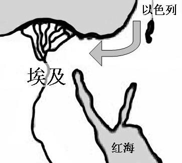

OT第四課 第31-36步 12個兒子 - 做夢
課程簡介：本課涵蓋基礎聖經內容，幫助學習者理解歷史或教義。
課程內容
前言
介紹課程的核心概念，請記錄筆記。
第1節
介紹課程的核心概念，請記錄筆記。
第四课 第 31 至 36 步
开始之前
请你千万不要跳过这一部分！要充分掌握本教材的内容，关键是温习。因此，让我们来看看你做过的：
你有没有与伙伴温习过前面每一步？如果已温习过，请打钩。（ ） 把各步默写下来：
|
第 1 步： |
第 2 步： |
第 3 步： |
|
第 4 步： |
第 5 步： |
第 6 步： |
|
第 7 步： |
第 8 步： |
第 9 步： |
|
第 10 步： |
第 11 步： |
第 12 步： |
|
第 13 步： |
第 14 步： |
第 15 步： |
|
第 16 步： |
第 17 步： |
第 18 步： |
|
第 19 步： |
第 20 步： |
第 21 步： |
|
第 22 步： |
第 23 步： |
第 24 步： |
|
第 25 步： |
第 26 步： |
第 27 步： |
|
第 28 步： |
第 29 步： |
第 30 步： |
有多少步你要看书或笔记才能记起？把数目写下： 。如果是“0”的话，请告诉你的导师。
步步向前
我们已经学了不少步，但之后还有很多步要学习。我们的旧约旅程带我们到了应许之地以色列。在这一课，我们会看到以色列由一个只有 70 人的游牧群体，发展成一个数百万人的民族。我们也会看到神仁慈奇妙的作为，他把以色列民从苦难中拯救出来。
在这一课中，步的数目较少，但覆盖的年日却较长──超过 400 年！因此你要不断温习这些步，熟习它们，不可懒惰。你也许还有点不习惯，但只要你练习得愈多，就会愈习惯。
第 31 步 十二个儿子
动作：食指十字形交叠，再分开往上指
两只手的食指交叠，呈“十”字形，然后两只手指分开，往上指，表示“二”，这就代表“十二个儿子”。
年份：约主前 1900 年 中国历史：夏朝
经文：
创 35:22~26 ……雅各共有十二个儿子。23 利亚所生的是雅各的长子流便，还有西缅、利未、犹大、以萨迦、西布伦。24 拉结所生的是约瑟、便雅悯。25 拉结的使女辟拉所生的是但、拿弗他利。26 利亚的使女悉帕所生的是迦得、亚设。
问题：
利亚有多少个孩子？拉结呢？
解释：
这段经文告诉我们雅各有 12 个儿子，他们的母亲分别是利亚、利亚的使女悉帕、拉结和她的使女辟拉。
一、历史重演：小的跟大的相争
起初，两姊妹为了抓着丈夫的心而大大相争。她们给儿子所起的名字都充满了 “争胜”的味道。最典型的例子就是拿弗他利，他名字的意思就是“相争”。
利亚以为她为雅各生了孩子后，雅各就会爱她，与她联合，但事实并非如此。至于拉结，她并没有因为雅各宠爱她而感到满足，反而因为自己未能生育而嫉妒姐姐，担心自己在雅各心中的位置被姐姐取代。两姊妹越争越烈，甚至把自己的使女给雅各为妾也在所不惜。本来要争的是丈夫的宠爱，最后却主动把自己的使女送给丈夫为妾。一夫两妻已经够麻烦，一夫两妻两妾就更麻烦，事情的发展是多么的荒谬。
雅各日间放羊已经很疲累，回到家中，还要面对这样的家庭，令他更疲累。对两位妻子而言，他在家中的作用就是跟她们或她们的使女生孩子，满足她们争胜的欲望；在娶妾和给孩子起名的事上，他一直没有发言权。在整段经文，他只说过一句话；除了生气外，经文并没有提到他任何其他的感受。毕竟这些事情──小的跟大的相争，大的跟小的相争，如同一面镜反照他的本相──他之所以要投靠拉班，被拉班欺骗，被迫娶了自己不喜欢的利亚，最终弄到两姊妹相争，一切都源于他昔日作为小的，要跟大的（以扫）相争，用自己的方法去争取神要给他的福气。面对此情此景，他无话可说，但百般滋味在心头。
二、神的介入
我们刚才所读的经文有一个一再重复的内容，是关乎神的。你能找出来吗？
· 创 29:31 耶和华见利亚失宠，就使他生育…
· 创 30:17 神应允了利亚，他就怀孕，给雅各生了第五个儿子。
· 创 30:22 神顾念拉结，应允了他，使他能生育。
雅各很被动，很无奈，但神却主动介入。圣经的作者在经文的开始、结尾都强调神顾念利亚和拉结，应允了她们，使她们能生育。正如雅各所说的，使他的妻子能生孩子的是神（参创 30:2）。
无论雅各为人有多大问题，他的婚姻有多混乱，他两个妻子有多不和，有多大的相争，她们所作的有多荒谬，神仍然掌管着一切。整段经文强调她们和她们的使女之所以能生育，是因为神顾念她们，听见和应允她们的呼求。正如雅各所说的，一切不在乎人的力量，乃在乎神自己。
他们不知道的是，神要借这十二个儿子，实现他对亚伯拉罕所立的约的其中一个部分：后裔。他们的偏心、嫉妒、相争、混乱、荒谬，不单不能拦阻神实现他对亚伯拉罕的应许，反而在他们不知不觉中，“成就”了神对亚伯拉罕的应许，使神救赎的计划向前再迈进一步。
这不是说，既然有神“包圆”，那我们就可以任意而为，因为这样必定会为自己或别人带来痛苦。雅各的儿子们都经历从罪而来的苦难和艰辛，个别更经历全能者的严厉管教。如果有时间，可以查看下面的例子：
|
儿子 |
不当行为 |
后果 |
|
流便 |
创 35:22 |
创 49:3-4 |
|
利未和西缅 |
创 34:25-29 |
创 49:5-7 |
|
犹大 |
创 38:1-18 |
创 38:25-26 |
|
9 个兄弟 |
创 37:23-28 |
创 42:21-22 |
然而，不管我们所身处的环境，充斥着多少混乱、荒谬的事情，有多少事情是我们无力处理或解决的，我们仍要谨记：神可以借这些事情，来成就他给我们的应许和计划。下一步关乎约瑟被卖到埃及之后所发生的事情，就是一个最典型的例证。
第 32 步 约瑟被卖到埃及
动作：双手像被绑着，走向埃及
双手交叉互握在一起，好像被捆绑一样，从以色列走到埃及。
年份：约主前 1900 年 中国历史：夏朝
经文：
创 39:1 约瑟被带下埃及去。有一个埃及人，是法老的内臣护卫长波提乏，从那些带下他来的以实玛利人手下买了他去。
创 40:15 我实在是从希伯来人之地被拐来的；我在这里也没有做过什么，叫他们把我下在监里。
创 45:7~8 神差我在你们以先来，为要给你们存留余种在世上，又要大施拯救，保全你们的生命。8 这样看来，差我到这里来的不是你们，乃是神；他又使我如法老的父，作他全家的主，并埃及全地的宰相。
问题：
约瑟被卖到埃及哪户人家？
这家的主人跟法老是什么关系？

解释：
雅各宠爱拉结，因而特别宠爱拉结所生的约瑟，这使他的十个哥哥嫉妒约瑟；加上约瑟常常把他哥哥的恶行报告给他父亲，他的哥哥就更加憎恨他。最终，他们找到一个机会，把他卖到埃及。
【教学提示：老师可以按学员的程度，考虑请一些对圣经较认识的学员简单介绍约瑟被卖到埃及的经过。】
约瑟的人生跟梦有密切的关系，甚至他的兄弟以“那做梦的”来形容他（参创37:19）。约瑟一生的故事非常传奇，真的好像做梦一般。
第一段经文指出，约瑟最终被卖给埃及法老的一个侍臣波提乏。第二段经文说明：打从他被卖到埃及到他坐牢，他一直认定自己是被卖到埃及的。第三段经文却指出，当他成为了埃及全地的宰相，回望过去的时候，他却从另一个角度来看整件事：他不再认为自己是被卖到埃及，却重复提到是神差他到埃及来的，并且是神使他成为法老的顾问、埃及最高的官员和埃及全地的宰相，以致在全地大饥荒的时候，可以保存他们一家人的性命。为何他的看法会有这么大的改变？现在就让我们重温他在埃及的一些人生片断。
|
1.哥哥间接把约瑟卖给法老的内臣波提乏 |
7.离开法老监牢的希望落空了 |
|
2.因拒绝波提乏妻子的引诱而被波提乏下在法老的监里 |
8.两年后，法老发梦；酒政却忽然记起约瑟 |
|
3.在司狱眼前蒙恩，不但不被欺负，还有机会跟其他犯人倾谈 |
9.虽然约瑟不是埃及人，对梦的解释 尚未兑现，却得到法老信任，马上成为宰相，成为埃及最高的官员 |
|
4.期间，法老的酒政和膳长也入狱 |
10.果真连续七年大丰收 |
|
5.约瑟为他们解梦，他们的梦都成真 |
11.果真连续七年大饥荒 |
|
6.事隔三天，酒政竟忘了约瑟 |
12.弟兄来买粮……一家团聚 |
教学活动：分组讨论
在上面的事件中：
1.
哪些可以被看为是偶然发生的事？哪些绝对不可能是偶然发生的事？（埃及有很多大户人家，被卖给法老的侍臣波提乏可以被看为是偶然的事。解梦解对了，绝对不是偶然的事。）
2.
哪些是坏事？哪些是好事？（约瑟被卖到埃及是坏事；拒绝主母的试探是好事；被主母陷害和被波提乏下在法老的监里都是坏事。）
3.
哪些是大错失／大事？哪些是小错失／小事？（哥哥们把约瑟卖了是大错失；酒政忘记了约瑟是小错失。）
4.
哪些事关乎自然气候？哪些关乎政治？（七年大丰收、大失收，跟自然气候有关，是大事；成为宰相是政治的事，也是大事。）
5. 哪些事情是约瑟能够控制的？哪些事情是他不能控制的？（除了他拒绝波提乏妻子的引诱，所有的事都不是约瑟能够控制的。就是解梦，他自己也很清楚知道，是神给他解梦的能力。）
约瑟一生的故事说明：不管是看似偶然发生的事，还是绝对不可能是偶然发生的事；不管是好事，还是坏事；是大错失，还是小错失；是自然气候的事，还是政治的事；是大事，还是小事；是我们能控制的，还是我们不能控制的；所有事情都在那位用他权能的命令托住万用的神的护理之下（参来 1:3）。按圣经原文，“托住”的意思不单是支撑着，还有“带着”的意思，也就是说，神能够把事情带到他所指定的地步。埃及有很多大户人家，但若不是被卖到波提乏的家，又怎会被下在法老的监里；若不是被下在法老的监里，又岂能为酒政解梦？若酒政被释放后，记起约瑟，约瑟就会被释放回家，又岂能成为埃及的宰相……？
从雅各之所以得到十二个儿子和约瑟由于被卖到埃及而最终成为埃及的宰相，我们可以看见，不管事情多么混乱，中间夹杂了多少的嫉妒、错失、痛苦，然而神掌管一切，并且能够使万事互相效力，叫爱他的人得益处，甚至可以使苦难化成祝福，使恶事变成好事，使黑暗变为光明。
当然，约瑟的经历也告诉我们：我们不一定可以在短期内明白神容许某些事情临到我们身上的旨意，甚至有些时候，事情的发展令我们感到非常失望。然而，我们要持定信心，坚忍下去，因为终有一天，当我们回头看的时候，就会明白神一直在引领我们，要成就他在我们身上的计划。正如约瑟回望过去的时候，他重复提到：是神差他去埃及，为要拯救他一家。
因此，不管我们落在什么景况里，遇到什么事情，我们不要忘记：创天造地的主恒常地用他权能的命令托住所有的事，按他的慈爱、智慧和能力，把事情带往一个为我们互相效力的方向。
第 33 步 400 年
动作：竖起四只手指
竖起四只手指，说：“400 年”。雅各的后裔，就是以色列人，在埃及作奴仆 400 年。
年份：主前 1900~1500 年 中国历史：夏朝末年、商朝
经文：
出 1:6~7 约瑟和他的弟兄，并那一代的人，都死了。以色列人生养众多，并且繁茂，极其强盛，满了那地。
出 1:8~10 有不认识约瑟的新王起来……对他的百姓说：……来吧，我们不如用巧计待他们，恐怕他们多起来，日后若遇什么争战的事，就连合我们的仇敌攻击我们，离开这地去了。
创 15:13 耶和华对亚伯兰说：你要的确知道，你的后裔必寄居别人的地，又服事那地的人；那地的人要苦待他们四百年。
问题：
根据创世记 15 章 13 节，亚伯拉罕的后裔要寄居在异地多久？他们要受到怎样的对待？
为什么不认识约瑟的新王要那样对待以色列人？

解释：
我们很快就进到出埃及记。由于遍地大饥荒，约瑟和兄弟相认后，就把他父亲和他的兄弟所有的家人都接到埃及。当雅各一家去埃及定居的时候，他们整个家族合共有 70 人（参创 46:27）。他们得到最适合牧羊的歌珊地，又得到埃及的保护。此外，由于埃及人厌恶牧羊的人，埃及人也就不会跟他们结婚，他们就不会被同化。整个民族因而可以在一个安全、美好
的环境下壮大起来。当约瑟和他的弟兄，并那一代人都死了。以色列人的情况如何？
正如神给亚伯拉罕和雅各的应许所说的，他们生养众多，并且繁茂，极其强盛，遍满了那地。
根据出埃及记第１章，有一位不认识约瑟的新王兴起，他决定要苦待以色列人。为什么？因为他怕以色列人跟埃及的敌人里应外合，推翻埃及的统治。于是埃及人苦待以色列人四百年，正如神多年前跟亚伯兰所说的。
法老派督工辖制他们，加重担苦害他们，例如：建造两座积货城（参出 1:11）；
法老严厉地强迫他们做工：和泥、做砖、做田间各样的工，令他们感到命苦（参出 1:13~14）；
法老找收生婆杀男婴（参出 1:15~16）；
法老吩咐他的众百姓：把以色列人所生的男孩都丢在河里（参出 1:22）。
为什么他们要受这些苦？圣经并没有解释，只是说：以色列人越受苦害，就越发昌大，越发蔓延，埃及人因而愁烦。按理，他们越受苦害，就应该越衰落，但整个民族的生命力却越发旺盛。这表明神一直在保守、看顾和赐福给他们。
逼迫与教会增长
由早期教会开始，各地教会的历史都说明了一个事实：不管社会、政局有多大改变，苦难、逼迫并不一定能摧毁神的教会。相反，正如雅各書所說，若教会以敬虔、顺服和坚忍的态度来回应，神可以借苦难使教会得益。昔日希律逼迫早期教会，杀了雅各，然而，最终的结果是神的道越发兴旺，越发广传。
有报导指出：伊朗在 1979 年的伊斯兰革命后，大肆逼害基督徒，可是在 21 世纪初，伊朗已经成为全球教会增长最快的国家。为什么？越发受逼迫，教会就越发祷告，神就大大作工。
当世局变得昏暗时，我们担忧因信仰而受逼害是可以理解的，毕竟没有人喜欢受痛苦。然而，我们不要忘记：创天造地的主是我们人生的主人，我们的生活、动作、存留只在乎他，并且从约瑟的一生，我们知道就是政治上的大事，也在神的掌管和引领之下。面对各种不明朗的情况，我们要更多的彼此扶持，彼此代求。
注意：虽然有些经文说以色列人在埃及的日子是 400 年，有些说是 430 年，但两者并无矛盾。430 年是他们住在埃及的准确年数（参出 12:41）；但有些地方，圣经以约数 400 年来描述他们在埃及的年期。为方便记忆，我们在课程中也用了约数。
第 34 步 差遣摩西
动作：作脱鞋的模样
站在西乃山，双手假装要脱左脚的鞋子。
上帝呼召摩西的时候，吩咐他脱下鞋子，因为他站着的地方是圣地！所以这一步我们用脱鞋的动作来表示。
年份：主前 1450 年 中国历史：商朝
摩西蒙神保守，法老女儿不但没有杀害他，更收他为养子；
摩西学了埃及人一切学问，说话行事都有才能（参徒 7:22），包括武术； 40 岁时，打死一个埃及人；为逃避法老追杀，逃往米甸；
投靠米甸的祭司，成为他的女婿，牧养岳父的羊。80 岁时，有一天领羊群到了何烈山。
经文：
出 3:3、5 摩西说：我要过去看这大异象，这荆棘为何没有烧坏呢？5 神说：不要近前来。当把你脚上的鞋脱下来，因为你所站之地是圣地。
出 3:7、10 耶和华说：我的百姓在埃及所受的困苦，我实在看见了；他们因受督工的辖制所发的哀声，我也听见了；我原知道他们的痛苦。……10 故此，我要打发你去见法老，使你可以将我的百姓以色列人从埃及领出来。
问题：
根据出埃及记 3 章 7 节，神看见了什么？他听见了什么？因此他要怎么样？当你受困苦压迫而忧伤哀叹时，神听见你的声音吗？
根据出埃及记 3 章 10 节，谁差遣摩西？他要差摩西去埃及见谁？摩西要在那里做什么？
解释：
以色列人在埃及被奴役，出埃及记的第二和第三章重复提到神确实知道他们的痛苦，听见他们的哀声，看见他们所受的困苦。为了拯救以色列人，神就差遣摩西去见法老，领以色列人离开埃及。
一天，当摩西领他岳父的羊群到了何烈山，也就是西乃山的时候，他看见一个大异象：荆棘被火烧着，却没有被火烧毁。当他过去看的时候，神就在火焰中向摩西显现，跟他说，要脱鞋，因他所站的是圣地。那处只是野地，为何会是圣地？因为那儿有神的同在，有神能力的彰显。因此，神吩咐他脱鞋。
当神呼召他作以色列的拯救者时，摩西作了好几个回应，表示不想接受呼召。在这些借口中，有没有一些也是你使用过的推搪之词，目的是要逃避神要你做的事情呢？
|
摩西的借口 |
神的回答 |
|
3:11 我是什么人？竟能去见法老，将以色列人从埃及领出来呢？（我是谁啊？） |
3:12 我必与你同在。你将百姓从埃及领出来之后，你们必在这山上事奉我；这就是我打发你去的证据。 |
|
第一个借口：我是什么人？我不行。若有弟兄姊妹这样回应，我们一般会说：你行的。然而神的回应是：我必与你同在，一切包在我身上。神不单给他应许，更给他保证：摩西和百姓离开埃及后，必定会来到这山上事奉神；若他不能成功地把他们领来，那就证明神失信：没有与他同在。 从创世记开始，你会发现，当神呼召一个人去作一件在那个人看来是不可能完成的任务的时候，神常常会同时给他一个应许：与他同在。然而，即使任务看来是可以完成的，我们也要谦卑下来，倚靠神，不要倚靠自己。 当大家要去教导这个课程时，你可能也会说：“我是什么人？竟能去教导呢？”然而，你去教导的时候，你就是在履行大使命，而当我们履行大使命的时候，主应许要与我们同在直到世界的末了。还有，当你对教导这个课程已有一定的经验后， 不要倚靠你的经验，仍要恳切祷告，求神与你同在。 |
|
|
出 3:13 摩西对神说：“我到以色列人那里，对他们说：‘你们祖宗的神打发 我到你们这里来。’他们若问我说：‘他叫什么名字？’我要对他们说什么呢？” |
出 3:14~15 神对摩西说：“我是自有永有的。”又说：“你要对以色列人这样说： ‘那自有的打发我到你们这里来。’”15神又对摩西说：“你要对以色列人这样说： ‘耶和华你们祖宗的神，就是亚伯拉罕的神，以撒的神，雅各的神，打发我到你们这里来。’耶和华是我的名，直到永远，这也是我的记念，直到万代。” |
|
对以色列人来说，名字不纯粹是一个名称，而是标志着相关的特性。例如：神给亚伯兰新的名字：亚伯拉罕，意味着他要作多国之父。 简单来说，摩西的第二个问题或借口是：你说你与我同在，那么，你是谁？我不认识你。 神的回答是：我是自有永有的。原文的意思是：是，我是；“自有”强调神不是被造的，“永有”则强调神永远都是一样的，神是信实不变的神。如果有人问神，宇宙出现前，你是不是已经在呢？神会答：“是，我是。”若有人问神：10,000 年后，你跟现在的你是一样的吗？神会说：“是，我是。”神是信实不变的，他就是那位一直带领、赐福给亚伯拉罕、以撒、雅各的神。他跟他们这个民族的关系至少有 400年之久。在《和合本》中，这段经文的“耶和华”的意思就是“我是自有、永有的”。 面对神给我们的呼召，当我们犹疑不决的时候，我们也要问：这位应许与我同 在的神到底是怎么样的一位？他到底是谁？我们也可以回顾神一直以来的作为，然后问：他信实吗？ |
|
|
4:1 摩西回答说：他们必不信我，也不听我的话，必说：耶和华并没有向你显现。（我有什么权柄呢？他们怎会相信我？） |
神给摩西能力行三个神迹（参 4:2~9）： 杖变蛇，蛇变杖； 手长大痳疯，回复正常； 河水变成血。 |
|
神对摩西非常忍耐，给摩西能力行三个神迹，让百姓可以信他。 作为事奉人员，我们是否有权威，不在乎我们在教会有多资深，受过多少教育，人脉有多广，最重要的是我们拥有从神而来的能力，因此要传道和活道。传道的意思就是你以神的圣言来牧养弟兄姊妹，因为出于神的话，没有一句是不带着能力的。第二，你能活道，有美好的生命，反映神的荣耀。符合这两个条件，你的 服事自然会有从神而来的能力，有从神而来的权威。 |
|
|
出 4:10 摩西对耶和华说：“主啊！我 素日不是能言的人，就是从你对仆人说话以后，也是这样；我本是拙口笨舌的。” |
出 4:11~12 耶和华对他说：“谁造人的 口呢？谁使人口哑、耳聋、目明、眼瞎呢？岂不是我耶和华么？12 现在去吧！我必赐你口才，指教你所当说的话。” |
|
摩西自觉无法说服法老和百姓，甚至认为自己是拙口笨舌的。神指出他是创造者，是他赋予人听觉、视力和说话的能力。即使人有残障，但神仍然可以使用人来成就他的旨意。摩西不用再推三推四了，现在就去吧，因为神必赐他口才，指教他当说的话。我们往下读就会知道，法老之所以最终容许以色列人出埃及，完全跟摩西的口才无关。 神岂会不清楚我们的限制？但我们的限制并不能限制神。我们在事奉里一定 要谨记一件事：神什么时候给你一个命令、工作，神就什么时候给你遵行或完成这个命令所需要的恩典。 |
|
|
出 4:13 摩西说：“主啊！你愿意打发谁，就打发谁去罢！”（礼貌地说：你还是打发其他人好了。） |
出 4:14~15 耶和华向摩西发怒说：“不是有你的哥哥利未人亚伦么？我知道他是能言的，现在他出来迎接你，他一见你心里就欢喜。15 你要将当说的话传给他， 我也要赐你和他口才，又要指教你们所当行的事。” |
|
摩西最后的借口是：你还是打发其他人吧；他没有说：“我在这里，请差遣我。”神向他发怒，因为摩西的借口表明：他还是不信任神。然而，神对他十分忍 耐，也早知他会这样。所以为他预备了他哥哥亚伦来帮助他。神真的知道他的需 要，并且再次保证：必要赐他们口才，又要指教他们所当行的事。 我们可能会认为，自己不合适去承担神的呼召。但从旧约历史，我们可以清楚看到：很多时候，神并不是按人的标准、想法去拣选人。诚然，我们有很多的限制、不足，然而，当我们彼此同心合意事奉的时候，我们所缺乏的，神会借弟兄姊 妹补足。 |
|
你会如何回应神的呼召呢？
我是谁？我不行……？ 我没有知识？
我没有权威，没有人会相信我？ 我没有口才／恩赐？
我不是最合适的人选？2
教会要开展新事工，就会呼召弟兄姊妹一同参与。面对呼召，很多时候，我们的反应会跟摩西的一样，会提出各种理由，但焦点都是放在我们自己身上，但却没想到神。举例来说，年纪大并不是一个合理的理由。神呼召摩西的时候，他年纪多大？八十岁。即使你已经超过六十岁，神仍然可以呼召你。我们要有一个心志：要像香柏树、棕树一样，在年老的时候仍要结果子，而且“鲜美多汁”，成为多人的祝福（参诗 92:14）。
第 35 步 容我的百姓去
动作：双手放在嘴边，像要大声叫喊
我们仍然站在埃及这地方。双手掌心向外，放在嘴巴两旁，好像要大声叫喊的样子，说：“容我的百姓去！”
年份：主前 1450 年 中国历史：商朝
经文：
出 8:1 耶和华吩咐摩西说：你进去见法老，对他说：耶和华这样说：容我的百姓去，好事奉我。(参出 4:23，7:16，8:1、20，9:1、13，10:3)
问题：
耶和华吩咐摩西对谁说话？ 他的信息是什么？
解释：
出埃及的目的是什么？神最少七次吩咐摩西去告诉法老：容神的百姓去，好事奉神（参出 4:23，7:16，8:1、20，9:1、13，10:3）。当时，以色列人被埃及人奴役，事奉埃及人。然而，神要摩西进去见法老，对他说：“容我的百姓去，好事奉我。”
出埃及记无疑是一卷关于拯救的书，但神拯救以色列人的目的是要他们事奉他。这也是神拯救我们的目的。昔日，我们是罪的奴仆，但今天，我们既从罪中得了释放，就要事奉永生神（参罗 7:22；来 9:14）。所以，面对你所牧养的初信弟妹，你要知道你的目标是要把他们带到事奉中。无论如何，我们要鼓励和提醒初信的弟兄姊妹：信主只是一个开始，我们每一个人，都要像教会的传道人一样，走上事奉的路，只是事奉的岗位和方式不一样而已。
教会领袖要与神合作，把信徒带到事奉中；但不少领袖却倾向把所有的事奉统统由自己来承担。领袖们！我们要装备会众，预备好他们，让他们去事奉，祝福别人，使他们可以享受事奉耶稣的喜乐！你自己也要好好事奉，成为使别人得福的器皿！
第 36 步 “做梦！”
动作：双手交叉，往下分开
双手交叉在胸前，然后向下分开，表示不可能的意思。
年份：主前 1450 年 中国历史：商朝
经文：
出 5:2 法老说：耶和华是谁，使我听他的话，容以色列人去呢？我不认识耶和华，也不容以色列人去！
出 9:13~16 耶和华吩咐摩西说：……站在法老面前对他说：……我叫你存立，是特要向你显我的大能，并要使我的名传遍天下。
问题：
法老说他不认识谁？他决定不做什么？
神叫法老存立，没有杀掉他，目的是什么？
解释：
对于摩西的要求，让以色列人离开埃及去事奉耶和华，法老第一个反应就是：休想，不用谈，不可能。法老之所以这样说，因为他不知道耶和华是谁，也没兴趣知道他是谁。总而言之，对他来说，以色列人想离开埃及，是不可能的。
我们都知道法老的心很刚硬。为什么神容许法老的心这样一直刚硬下去？事实上，神清楚向法老表明：神若伸手用瘟疫攻击法老和埃及人，法老早就从地上除灭了。神让法老存立，是要让他、他的臣仆和埃及所有的人认识神的大能，知道以色
列人的神才是独一的真神（参出 9:15~16）。与此同时，神怜悯法老和埃及人，没有一下子就杀他们或他们头生的。
总结：
神救赎我们，是要我们事奉他。在事奉中，我们要注视的是神，不是我们自己的不足、缺欠。不管环境多么混乱、荒谬，神仍然能信守他给我们的应许，实现他在我们身上的计划。神不一定马上兑现他的应许或为我们解决问题。然而，若我们持定信心，坚持下去，我们就会看见神一直用他权能的命令托住万有，他一直带领着一切，使万事为我们互相效力。
回顾一下我们所做过的……
1. 请利用你身处的空间，设定地图的位置，与伙伴温习全部 36 步。要做到你感到轻松自然为止。
2. 把各步默写下来：
|
第 1 步： |
第 2 步： |
第 3 步： |
|
第 4 步： |
第 5 步： |
第 6 步： |
|
第 7 步： |
第 8 步： |
第 9 步： |
|
第 10 步： |
第 11 步： |
第 12 步： |
|
第 13 步： |
第 14 步： |
第 15 步： |
|
第 16 步： |
第 17 步： |
第 18 步： |
|
第 19 步： |
第 20 步： |
第 21 步： |
|
第 22 步： |
第 23 步： |
第 24 步： |
|
第 25 步： |
第 26 步： |
第 27 步： |
|
第 28 步： |
第 29 步： |
第 30 步： |
|
第 31 步： |
第 32 步： |
第 33 步： |
|
第 34 步： |
第 35 步： |
第 36 步： |
3. 温习本课的应用和神的教导，并写在下面：
4. 基于你所学到的，有没有什么是神想你去做的？请写在下面：
31.十二個兒子 12 sons 31. Mười hai con trai
|
31.十二個兒子 |
12 sons |
Two forefinger make a cross, and then separate into 2 fingers |
31. Mười hai con trai |
Ngón tay trỏ xếp thành hình chữ thập, sau đó phân khai và chỉ lên phía trên |
创 Gen Sáng thế ký35:23-26
|
經文：
創35:23-26 __________所生的是雅各的長子流便，還有西緬、利未、猶大、以薩迦、西布倫；24__________所生的是約瑟、便雅憫；25 拉結的使女__________所生的是但、拿弗他利；26 利亞的使女__________所生的是迦得、亞設，這是__________在巴旦亞蘭所生的兒子。
雅各祝福 Gia Cốp được ban phước

https://freewechat.com/a/MzI5MjU4OTA4Ng==/2247492002/3
雅各四妻妾十二子ㄧ女 創30:1-24 Bốn người vợ và mười hai thê thiếp của Gia-cốp, và mười hai người con trai của ông là Nugenesis 30: 1-24

《啟示錄》第7章記載，末日前以色列十二支派 Khải Huyền chương 7 ghi lại mười hai chi tộc Y-sơ-ra-ên trước khi kết thúc ngày

★ot_030_12 chi phái Ysoraen 12 支派

http://www.truongkinhthanhtructuyen.org/vb/12-chi-phai-ysoraen
32.約瑟被賣到埃及 Joseph sold to Egypt 32.Giô-sép bị bán đến Ai-cập
|
32.約瑟被賣到埃及 |
Joseph sold to Egypt |
Two hands as tied up, and walk to Egypt |
32.Giô-sép bị bán đến Ai-cập |
Hai tay bị trói , và đi đến Ai-cập |
创 Gen Sáng thế ký37:23-24、28
|
經文：
創37:23-24、28 __________到了他哥哥們那裏，他們就剝了他的外衣，就是他穿的那件彩衣；24 把他丟在_____裏，那坑是空的，裏頭沒有水。……28 有些米甸的商人從那裏經過，哥哥們就把__________從_____里拉上來，講定二十舍客勒銀子，把約瑟_____給以實瑪利人。他們就把約瑟帶到__________去了。
約瑟被賣到埃及 Joseph sold to Egypt Giô-sép bị bán đến Ai-cập

https://freewechat.com/a/MzI5MjU4OTA4Ng==/2247486196/2
約瑟的故事(雅各的眾子) Câu Chuyện về Giô-sép (Các Con Trai của Gia Cốp)

約瑟:得勝的君王 Joseph: Vị Vua Chiến Thắng

|
|
|
超越自我的生命1.從示劍到多坍：順服－＞忠心 超越年齡的限制 2.從泥坑到宮庭：忘記－＞饒恕 超越環境的困頓 3.從死亡到生命：哭泣－＞安慰 超越嫉恨的苦毒 思想：超越自我生命的動力
|
Một cuộc sống vượt lên trên bản thân 1. Từ Shechem đến Dothan: vâng lời - > trung thành Vượt qua giới hạn độ tuổi 2. Từ hố bùn đến tòa án: quên - > tha thứ Vượt qua những khó khăn của môi trường 3. Từ cái chết đến sự sống: Khóc - > an ủi Vượt lên trên sự cay đắng của sự ghen tuông Suy nghĩ: Động lực của cuộc sống vượt ra ngoài chính mình |
|
|
|
★ot_032_Các anh của Giô-sép ghét chàng 約瑟的哥哥們都恨他

Sáng-thế Ký 37:1-35. 創世記 37:1-35。
★ot_032_ (18) Chúa giúp Giô-sép cứu gia đình mình khỏi cơn đói kém trong xứ Ê-díp-tô và ban phước đặc biệt trên Y-sơ-ra-ên (18)上帝在埃及帮助约瑟救助他的家人脱离饥荒，约瑟得到以色列特别的祝福

★ot_032_ông giuse ở ai cập 約瑟被囚禁 1

★ot_032_ông giuse ở ai cập 約瑟被囚禁 2

★ot_032_Ông Giuse ở bị bán 約瑟被賣了 1

★ot_032_Ông Giuse ở bị bán 約瑟被賣了 2
★ot_032_17.
Giấc mộng của Giô-sép 17. 約瑟的夢 1

★ot_032_17. Giấc mộng của Giô-sép 17. 約瑟的夢 2

★ot_032_19. Giô-sép ở Ai Cập 19. 約瑟在埃及 1

★ot_032_19. Giô-sép ở Ai Cập 19. 約瑟在埃及 2

★ot_032_20. Giô-sép ở trong tù 20. 約瑟在監獄裡 1

★ot_032_20. Giô-sép ở trong tù 20. 約瑟在監獄裡 2

★ot_032_21. Mộng của Pha-ra-ôn 21.法老的夢 1

★ot_032_21. Mộng của Pha-ra-ôn 21.法老的夢 1

★ot_032_22. Ông Giu-se làm Ai Cập 22. 約瑟創造了埃及 1

★ot_032_22. Ông Giu-se làm Ai Cập 22. 約瑟創造了埃及 2

★ot_032_23. Gặp lại Bênjamin 23. 再次見到本傑明 1

★ot_032_23. Gặp lại Bênjamin 23. 再次見到本傑明 2

★ot_032_24. Ta là Giô-sép 24. 我是約瑟 1

★ot_032_24. Ta là Giô-sép 24. 我是約瑟 2

33. 400年 400 years 33. 400 Năm
|
33.400年 |
400 years |
Rise 4 fingers |
33. 400 Năm |
Dơ bốn ngón tay lên |
创 Gen Sáng thế ký15:13 出 Exo Xuất Ê-díp-tô ký 12:40 |
經文：
創15:13 耶和華對亞伯蘭說：“你要的確知道：你的後裔必寄居別人的地，又服事那地的人，那地的人要__________他們__________年。”
出 12:40 以色列人住在__________共有____________________年。
從迦南到埃及 Từ Canaan đến Ai Cập

以色列人被埃及人奴役四百年 Dân Y-sơ-ra-ên đã bị người Ai Cập bắt làm nô lệ trong bốn trăm năm
n 以色列人被埃及人奴役四百年
n 以色列人因此被埃及人奴役長達四百年之久，
n 如上帝對亞伯拉罕說：「你的後裔必寄居別人的地，又服事那地的人；那地的人要苦待他們四百年。」（創世記15:13）

Một vua ác cai trị xứ Ê-díp-tô邪惡的國王統治埃及

Xuất Ê-díp-tô Ký 1:6-22. 出埃及記 1:6-22。
★ot_033_25. Người Israel trở thành nô lệ 25. 以色列人淪為奴隸

34.差遣摩西 Sent Moses 34.Sai phái Môi-se
|
34.差遣摩西 |
Sent Moses |
Act as take off a shoe |
34.Sai phái Môi-se |
Làm như đang cởi giày |
出 Exo Xuất Ê-díp-tô ký 3:10 徒Act 7:34 |
經文：
出3:10 故此_____要打發你去見__________，使你可以將我的百姓以色列人______________________________。
徒 7:34 我的百姓在埃及所受的__________，我實在看見了，他們_________________________，我也聽見了。我下來要_______________。你來！
差遣摩西 Sent Moses Sai phái Môi-se

https://freewechat.com/a/MzI5MjU4OTA4Ng==/2247486360/2
Empowering the Staff, Moses & Aaron’s 赋予摩西和亚伦权杖， Trao
vương trượng cho Moses và Aaron 
https://www.pinterest.com/pin/78883430967407244/
★ot_034_ĐỨC CHÚA TRỜI KÊU GỌI MÔI-SE (Xuất Ê-díp-tô ký 2:23-3:12) 神呼召摩西（出 2:23-3:12）

★ot_034_25. Người Israel trở thành nô lệ


★ot_034_26.
Môi-se sinh ra 26.摩西出生 1

★ot_034_26.
Môi-se sinh ra 26.摩西出生 1

★ot_034_27.
Môi-se trốn đi Mađian 27. 摩西逃往米甸
★ot_034_27. Môi-se trốn đi Mađian 27. 摩西逃往米甸 2

★ot_034_28. Môi-se và bụi gai bốc cháy 28. 摩西與燃燒的荊棘

★ot_034_28. Môi-se và bụi gai bốc cháy 28. 摩西與燃燒的荊棘 2

★ot_034_29. Môi-se hội kiến Pharaôn 29. 摩西會見法老


★ot_034_30. Thiên Chúa ra oai quyền lực 30. 上帝彰顯祂的大能


★ot_034_31. Tiếp tục những dịch họa 31. 繼續災禍


★ot_034_32. Vượt qua 32.克服


★ot_034_33. Dân Israel ra khỏi Ai Cập 33. 以色列人離開埃及


★ot_034_34. Dân Israel băng qua biển đỏ 34. 以色列人渡過紅海


★ot_034_35. Thiên Chúa lo liệu cho dân người 35. 上帝供應祂的子民


★ot_034_36. Môi-se trên núi Sinai
36. 摩西在西乃山


★ot_034_37. Con bò vàng 37.金牛


★ot_034_38. Nhà tạm 38. 會幕


35.容我的百姓去 “Let my people go!” 35.Để cho đân ta đi
|
35.容我的百姓去 |
“Let my people go!” |
Put two hand before the mouth, as shout out loud |
35.Để cho đân ta đi |
Đặt hai tay cạnh miệng, như là đang loan tin |
出 Exo Xuất Ê-díp-tô ký 5:1
|
經文：
出5:1 後來摩西、亞倫去對法老說：“耶和華以色列的神這樣說：‘容我的百姓去……’”
容我的百姓去 “Let my people go!” Buông người của ta ra!

★ot_035_Môi-se và A-rôn gặp Pha-ra-ôn 摩西和亞倫遇見法老

Xuất Ê-díp-tô Ký 4:27-31; 5:1-23; 6:1-13, 26-30; 7:1-13. 出埃及記 4:27-31; 5:1-23；6:1-13, 26-30; 7:1-13。
★ot_035_29. Môi-se hội kiến Pharaôn 29. 摩西會見法老
★ot_035_30. Thiên Chúa ra oai quyền lực 30. 上帝彰顯祂的大能
★ot_035_30. Thiên Chúa ra oai quyền lực 30. 上帝彰顯祂的大能
★ot_035_31. Tiếp tục những dịch họa 31.繼續翻異像 1

★ot_035_31. Tiếp tục những dịch họa 31.繼續翻異像 2
★ot_035__32. Vượt qua 32.克服
★ot_035__32. Vượt qua 32.克服
★ot_035_35. Thiên Chúa lo liệu cho dân người 35. 上帝供應祂的子民


★ot_035_35. Thiên Chúa lo liệu cho dân người 35. 上帝供應祂的子民
36.“做夢!” “No way” 36.“chiêm bao!”
|
36.“做夢!” |
“No way” |
Two hand make a cross, and separate downwards |
36.“chiêm bao!” |
Đặt chéo tay cánh tay, và trải chung xuống |
出 Exo Xuất Ê-díp-tô ký 5:2 出 Exo Xuất Ê-díp-tô ký 9:35 |
經文：
出5:2 法老說：“_____________是誰，使我聽他的話，_________________呢？我不認識____________，也___________________________！”
出 9:35 法老的心__________，_______________________________，正如____________借著摩西所說的。
出4：21：神使法老的心剛硬 Xuất Ê-díp-tô ký 4:21: Đức Chúa Trời làm cứng lòng Pha-ra-ôn

https://henryau.org/2016/03/03/pharaoh_hardened_heart/
37. 十灾 Ten Plagues 37. Mười tai nan
第3節
總結本課的關鍵教導。
總結
總結本課的關鍵教導。
教學影片
觀看本課的教學影片，深入了解內容。
課後作業
作業1：閱讀與反思
閱讀相關經文，寫下200-300字反思。
作業2：經文記憶
背誦一節經文並分享其應用。